") , i = 1,2, ..., n, wobei X die unabhängige Variable und Y die abhängige Variable ist, passt die polynomielle Regression die Daten an ein Modell mit folgender Form an:
, i = 1,2, ..., n, wobei X die unabhängige Variable und Y die abhängige Variable ist, passt die polynomielle Regression die Daten an ein Modell mit folgender Form an:
Für einen gegebenen Datensatz , i = 1,2, ..., n, wobei X die unabhängige Variable und Y die abhängige Variable ist, passt die polynomielle Regression die Daten an ein Modell mit folgender Form an:
 |
(1) |
|---|
wobei k die Ableitungsordnung ist. Bei Origin ist k eine positive Zahl, die kleiner als 10 ist. Die Parameter werden mit der Methode der gewichteten kleinsten Quadrate geschätzt. Diese Methode minimiert die Summe der Quadrate der Abweichung zwischen der theoretischen Kurve und den experimentellen Datenpunkten für einen Bereich von unabhängigen Variablen. Nach der Anpassung kann das Modell mit Hypothesentests und dem Zeichnen von Residuen ausgewertet werden.
 wird der Y-Achsenabschnitt und die Parameter 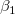, ,…,
wird der Y-Achsenabschnitt und die Parameter 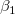, ,…,  werden die “teilweisen Koeffizienten” (oder “teilweise Steigungen”) genannt. Dies kann in Matrixform geschrieben werden:
werden die “teilweisen Koeffizienten” (oder “teilweise Steigungen”) genannt. Dies kann in Matrixform geschrieben werden:
|
(2) |
und
|
|
Angenommen,  sind unabhängige und identisch verteilt wie normalverteilte Zufallsvariablen mit
sind unabhängige und identisch verteilt wie normalverteilte Zufallsvariablen mit  und
und ![Var[E]=\sigma^2](../images/Polynomial_Regression_Results/math-5d3cf3883ed3c4d0b917f9fc2e8f776b.png "Var[E]=\sigma^2") . Um hinsichtlich
. Um hinsichtlich  zu minimieren, lösen wir die Funktion:
zu minimieren, lösen wir die Funktion:
|
(3) |
Das Ergebnis  ist die Schätzung der kleinsten Quadrate des Vektors B. Es ist die Lösung der linearen Gleichungen, die folgendermaßen ausgedrückt werden können:
ist die Schätzung der kleinsten Quadrate des Vektors B. Es ist die Lösung der linearen Gleichungen, die folgendermaßen ausgedrückt werden können:
|
(4) |
wobei X’ die Transponierte von X ist. Der prognostizierte Wert von Y für einen gegebenen Wert von X ist:
 |
(5) |
|---|
Indem  mit (4) ersetzt wird, wird die Matrix
mit (4) ersetzt wird, wird die Matrix  definiert.
definiert.
![\hat{Y}=[X(X'X)^{-1}X']Y=PY](../images/Polynomial_Regression_Results/math-9a8d7df1113cf6e1902177ad13919636.png "\hat{Y}=[X(X'X)^{-1}X']Y=PY") |
(6) |
|---|
Die Residuen werden definiert als:
|
(7) |
und die Residuensumme der Quadrate kann geschrieben werden als:
 |
(8) |
|---|
|
Hinweis: Es sollte erwähnt werden, dass die Terme höherer Ordnung in der polynomiellen Gleichung sehr große Auswirkungen auf die abhängige Variable haben. Folglich sind Modelle mit einer höheren Ordnung (höher als 4) extrem empfindlich im Bezug auf die Präzision der Parameter, wobei selbst kleinste Abweichungen der Koeffizientenwerte einen erheblichen Unterschied bei der Berechnung der Y-Werte verursachen können. Wir erwähnen dies, da die polynomiellen Anpassungsergebnisse standardmäßig auf 5 Dezimalstellen gerundet werden. Wenn Sie manuell diese berichteten Arbeitsblattwerte in die angepasste Kurve ziehen, kann der geringe Verlust an Präzision, der vom Runden kommt, einen spürbaren Effekt auf die Terme höherer Ordnung haben und Sie möglicherweise zu dem falschen Schluss führen, dass Ihr Modell fehlerhaft ist. Wenn Sie manuelle Berechnungen unter Verwendung Ihrer besten Fit-Parameterschätzungen durchführen möchten, stellen Sie sicher, dass Sie exakte Werte und keine gerundeten Werte verwenden. Beachten Sie, dass Origin zwar berichtete Werte auf 5 Dezimalstellen (oder andere) runden kann, diese Werte aber nur zu Anzeigezwecken verwendet. Origin verwendet immer exakte Werte (double(8)) bei mathematischen Berechnungen, es sei denn, Sie haben etwas anderes festgelegt. Weitere Informationen finden Sie unter Zahlen in Origin in der Origin-Hilfe.
Allgemein kann man sagen, dass jede kontinuierliche Funktion an ein polynomielles Modell höherer Ordnung angepasst werden kann. Terme höherer Ordnung können möglicherweise nicht viel praktische Bedeutung haben. |
Im obigen Abschnitt wird angenommen, dass es eine konstante Varianz in den Fehlern gibt. Wenn wir jedoch die Versuchsdaten anpassen, müssen wir vielleicht den Fehler des Instruments im Anpassungsprozess berücksichtigen (der die Genauigkeit und Präzision eines Messinstruments wiedergibt). Daher wird die Annahme der konstanten Varianz in den Fehlern verletzt. Wir müssen annehmen, dass normalverteilt ist mit einer nicht konstanten Varianz und die Fehler als  agieren, was als Gewichtung bei der Anpassung verwendet werden kann. Die Gewichtung wird definiert als:
agieren, was als Gewichtung bei der Anpassung verwendet werden kann. Die Gewichtung wird definiert als:
 |
|---|
Das Anpassungsmodell wird wie folgt geändert:
| 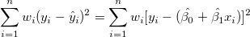 |
(9) |
|---|
Die Gewichtungsfaktoren  können durch drei Formeln gegeben sein:
können durch drei Formeln gegeben sein:
Der Fehlerbalken wird in der Berechnung nicht als Gewichtung behandelt.
 |
(10) |
|---|
Der Wert der instrumentellen Gewichtung ist antiproportional zu Instrumentenfehlern, so dass ein Versuch mit kleinen Fehlern eine große Gewichtung haben wird, da er im Vergleich zu Versuchen mit größeren Fehlern präziser ist.
 |
(11) |
|---|
| Hinweis: Die Fehler als Gewichtung sollten der Spalte "Y-Fehler" im Arbeitsblatt zu gewiesen werden. |
Fester Schnittpunkt mit der Y-Achse legt den Y-Schnittpunkt 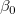 auf einen festen Wert fest, während der Gesamtfreiheitsgrad n*=n-1 ist aufgrund des festgelegten Schnittpunkts mit der Y-Achse.
Die Option Skalierungsfehler mit Quadrat (Reduziertes Chi-Qdr.) ist verfügbar, wenn mit Gewichtung angepasst wird. Diese Option beeinflusst nur den Fehler auf die Parameter, die der Anpassungsprozess meldet, und nicht den Anpassungsprozess selbst oder die Daten in irgendeiner Weise. Die Option ist standardmäßig aktiviert, und , die Varianz von  , wird zum Berechnen der Fehler auf die Parameter berücksichtigt. Ansonsten wird die Varianz von nicht zur Fehlerberechnung nicht berücksichtigt. Die Kovarianzmatrix soll als Beispiel dienen:
, wird zum Berechnen der Fehler auf die Parameter berücksichtigt. Ansonsten wird die Varianz von nicht zur Fehlerberechnung nicht berücksichtigt. Die Kovarianzmatrix soll als Beispiel dienen:
Skalierungsfehler mit Quadrat (Reduziertes Chi-Quadrat)
=\sigma^2 (X^{\prime }X)^{-1}") |
(12) |
|---|---|
 |
Keinen Skalierungsfehler mit Quadrat (Reduziertes Chi-Qdr.) verwenden:
=(X'X)^{-1}\,\!") |
(13) |
|---|
Für die gewichtete Anpassung wird ^{-1}\,\!") anstatt
anstatt ^{-1}\,\!") verwendet.
verwendet.
Formel (4)
Für jeden Parameter kann der Standardfehler, wie folgt, ermittelt werden:
|
(14) |
wobei  das j-te diagonale Element von
das j-te diagonale Element von ^{-1}") ist (beachten Sie, dass
ist (beachten Sie, dass ^{-1}") für die gewichtete Anpassung verwendet wird). Die Standardabweichung der Residuen (auch “StdAbw”, “Standardfehler der Schätzung” oder “Wurzel-MSE”) wird berechnet mit:
für die gewichtete Anpassung verwendet wird). Die Standardabweichung der Residuen (auch “StdAbw”, “Standardfehler der Schätzung” oder “Wurzel-MSE”) wird berechnet mit:
 |
(15) |
|---|
ist eine Schätzung von  . Dies ist die Varianz von .
. Dies ist die Varianz von .
| Hinweis: Bitte lesen Sie unter ANOVA-Tabelle weitere Einzelheiten zu Freiheitsgrad (df) . |
Bleiben die die Regressionsannahmen bestehen, können wir die t-Tests für die Regressionskoeffizienten mit der Nullhypothese und der Alternativhypothese ausführen:

Die t-Werte können wie folgt berechnet werden:
| 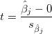 |
(16) |
|---|
Mit dem berechneten t-Wert können wir entscheiden, ob die entsprechende Nullhypothese verworfen werden soll oder nicht. Gewöhnlich können wir für ein gegebenes Konfidenzniveau für Parameter: 
 verwerfen, wenn
verwerfen, wenn  . Zusätzlich ist der p-Wert kleiner als .
. Zusätzlich ist der p-Wert kleiner als .
Die Wahrscheinlichkeit, dass  in dem t-Test oben wahr ist.
in dem t-Test oben wahr ist.
| 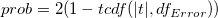 |
(17) |
|---|
wobei ") die kumulative Verteilungsfunktion der studentischen t-Verteilung bei den Werten |t| berechnen mit dem Freiheitsgrad des Fehlers
die kumulative Verteilungsfunktion der studentischen t-Verteilung bei den Werten |t| berechnen mit dem Freiheitsgrad des Fehlers ") .
.
Mit dem t-Wert können wir das \times 100\%") -Konfidenzintervall für jeden Parameter berechnen:
-Konfidenzintervall für jeden Parameter berechnen:
}\varepsilon _{\hat \beta _j}\leq \hat \beta _j\leq \hat \beta _j+t_{(\frac \alpha 2,n^{*}-k)}\varepsilon _{\hat \beta _j}") |
(18) |
|---|
wobei  und 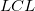 für Oberes Konfidenzintervall bzw. Unteres Konfidenzintervall steht.
und 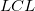 für Oberes Konfidenzintervall bzw. Unteres Konfidenzintervall steht.
Das Konfidenzintervall halbe Breite ist:
|
(19) |
Einige Fit-Statistikformeln werden hier zusammengefasst:

Der Freiheitsgrad für (Fehler) Streuung Weitere Einzelheiten finden Sie in der ANOVA-Tabelle.
|
(20) |
|---|
Die Residuensumme der Quadrate, siehe Formel (8).
Die Anpassungsgüte kann durch den Determinationskoeffizienten (COD)  bewertet werden, der gegeben ist mit:
bewertet werden, der gegeben ist mit:
|
(21) |
Der korrigierte wird zum Anpassen des -Wertes für den Freiheitsgrad verwendet. Es kann wie folgt berechnet werden:
| 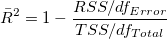 |
(22) |
|---|
Anschließend können wir den R-Wert berechnen, der einfach die Quadratwurzel von ist:
 |
(23) |
|---|
Quadratwurzel des Mittelwerts des Fehlers oder die residuale Standardabweichung ist gleich:
 |
(24) |
|---|
Ist gleich der Quadratwurzel von RSS:
 |
(25) |
|---|
Die ANOVA-Tabelle der polynomiellen Anpassung ist:
| Freiheitsgrade | Summe der Quadrate | Mittelwert der Quadrate | F -Wert | Wahrsch. > F | |
|---|---|---|---|---|---|
| Modell | k |  |
 |
 |
p-Wert |
| Fehler | n* - k | 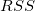 | ") |
||
| Gesamt | n* |  |
| Hinweis: Wenn der Schnittpunkt mit der Y-Achse im Modell enthalten ist, dann ist n*=n-1. Andernfalls ist n*=n und die Gesamtsumme der Quadrate ist unkorrigiert. |
Dabei ist hier die Gesamtsumme der Quadrate, TSS:
| 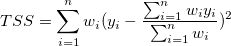 (korrigiert) | (26) |
|---|---|
 (unkorrigiert) (unkorrigiert) |
(27) |
Der F-Wert ist ein Test, ob das Anpassungsmodell sich signifikant von dem Modell Y = konstant unterscheidet.
Zusätzlich werden der p-Wert bzw. die Signifikanzebene mit einem F-Test ermittelt. Wir können die Nullhypothese verwerfen, wenn der p-Wert kleiner als ist, das heißt, das Anpassungsmodell unterscheidet sich signifikant von dem Modell Y = konstant.
Wenn der Schnittpunkt mit der Y-Achse bei einem bestimmten Wert festgelegt wird, ist der p-Wert für den F-Test nicht bedeutungsvoll und unterscheidet sich von dem in der polynomiellen linearen Regression ohne die Nebenbedingung des Schnittpunkts mit der Y-Achse.
Um den Test auf fehlende Anpassung auszuführen, müssen Sie sich wiederholende Beobachtungen zur Verfügung haben, d. h. "replizierte Daten" , so dass mindestens einer der X-Werte sich innerhalb des Datensatzes oder innerhalb mehrerer Datensätze wiederholt, wenn der Modus Zusammengefasster Fit ausgewählt ist.
Notationen, die für die Anpassung mit replizierten Daten verwenden werden:
 ist die j-te Messung, die beim i-ten X-Wert im Datensatz gemacht wurde. ist die j-te Messung, die beim i-ten X-Wert im Datensatz gemacht wurde. |
| ist der Durchschnitt von allen Y-Werten beim i-ten X-Wert. |
 ist die prognostizierte Antwort für die j-te Messung, die beim i-ten X-Wert gemacht wurde. ist die prognostizierte Antwort für die j-te Messung, die beim i-ten X-Wert gemacht wurde. |
Die Summe der Quadrate in der Tabelle unten wird ausgedrückt mit:
^2") |
|---|
| 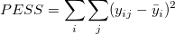 |
Die Tabelle des Tests auf fehlende Anpassung der linearen Anpassung ist:
| Freiheitsgrade | Summe der Quadrate | Mittelwert der Quadrate | F -Wert | Wahrsch. > F | |
|---|---|---|---|---|---|
| Fehlende Anpassung | c-k-1 | LFSS | MSLF = LFSS / (c - k - 1) | MSLF / MSPE | p-Wert |
| Reiner Fehler | n - c | PESS | MSPE = PESS / (n - c) | ||
| Fehler | n*-k | RSS |
|
Hinweis: Wenn der Schnittpunkt mit der Y-Achse im Modell enthalten ist, dann ist n*=n-1. Andernfalls ist n*=n und die Gesamtsumme der Quadrate ist unkorrigiert. Wenn die Steigung fest ist, ist c bezeichnet die Anzahl der eindeutigen X-Werte. Wenn der Schnittpunkt mit der Y-Achse festgelegt ist, ist der Freiheitsgrad für die fehlende Anpassung c-k. |
Die Kovarianzmatrix für die multiple lineare Regression kann, wie folgt, berechnet werden:
=\sigma ^2(X^{\prime }X)^{-1}") |
(28) |
|---|
Insbesondere die Kovarianzmatrix für die einfache lineare Regression kann, wie folgt, berechnet werden:
| 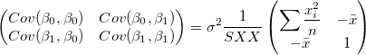 |
(29) |
|---|
Die Korrelation zwischen zwei beliebigen Parametern ist:
=\frac{Cov(\beta _i,\beta _j)}{\sqrt{Cov(\beta _i,\beta _i)}\sqrt{Cov(\beta _j,\beta _j)}}") |
(30) |
|---|
Das Konfidenzintervall für die Anpassungsfunktion besagt, wie gut Ihre Schätzung des Werts der Anpassungsfunktion bei bestimmten Werten der unabhängigen Variablen ist. Sie können mit 100 % Konfidenz davon ausgehen, dass der korrekte Wert für die Anpassungsfunktion innerhalb des Konfidenzintervalls liegt, wobei das gewünschte Konfidenzniveau ist. Dieses definierte Konfidenzintervall für die Anpassungsfunktion wird berechnet mit:
% Konfidenz davon ausgehen, dass der korrekte Wert für die Anpassungsfunktion innerhalb des Konfidenzintervalls liegt, wobei das gewünschte Konfidenzniveau ist. Dieses definierte Konfidenzintervall für die Anpassungsfunktion wird berechnet mit:
|
(31) |
wobei
|
(32) |
und C die Kovarianzmatrix ist.
Das Prognoseintervall für das gewünschte Konfidenzniveau α ist das Intervall, in das erwartungsgemäß 100% aller Versuchspunkte in einer Reihe wiederholter Messungen bei bestimmten Werten unabhängiger Variablen fallen. Dieses definierte Prognoseintervall für die Anpassungsfunktion wird berechnet mit:
|
(33) |
Wählen Sie einen Residuentyp unter Regulär, Standardisiert, Studentisiert, Studentisiert gelöscht für die Diagramme.
Punktdiagramm der Residuen  vs. unabhängige Variable
vs. unabhängige Variable  ; jede Zeichnung befindet sich in einem separaten Diagramm.
; jede Zeichnung befindet sich in einem separaten Diagramm.
Punktdiagramm der Residuen vs. Anpassungsergebnisse 
 vs. Abfolgenummer
vs. Abfolgenummer 
Histogramm des Residuums
Residuen vs. verzögertes Residuum }")
Das Wahrscheinlichkeitsnetz der Residuen (Normal) kann verwendet werden, um zu prüfen, ob die Varianz ebenfalls normalverteilt ist. Wenn das sich ergebende Diagramm linear ist, nehmen wir weiterhin an, dass die Fehlerterme normal verteilt sind. Das Diagramm basiert auf Perzentilen versus geordnete Residuen. Die Perzentile werden geschätzt mit
wobei n die Gesamtanzahl der Datensätze ist und i die i-ten Daten bezeichnet. Bitte lesen Sie auch Wahrscheinlichkeitsdiagramm und Q-Q-Diagramm.
 ,
,  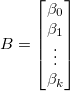,
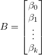, 
 = 0.
= 0.